EVIDENTIARY DOSSIER UNDER ARTICLE 115 EPC
Target Application: European Patent Application EP 4523100.3 / PCT/US2023/019103 ("Split Stay Ranking and Matching")
Applicant: Airbnb, Inc.
Coherent Evidentiary Chain
- ANNEX-T-002, ANNEX-T-003, ANNEX-T-005 — The database stores account-level and hotel-level relocation permissions[cite: 18, 19, 21].
- ANNEX-T-004, ANNEX-T-008, ANNEX-T-014 — The system has database fields and administrator settings to enable relocation[cite: 20, 25, 30].
- ANNEX-T-007, ANNEX-T-010, ANNEX-T-012, ANNEX-T-023 — The user-facing interface describes room relocation and hotel relocation[cite: 24, 26, 28].
- ANNEX-T-006, ANNEX-T-011 — The backend reads relocation parameters and applies account-level permissions[cite: 22, 27].
- ANNEX-T-015, ANNEX-T-016, ANNEX-T-017 — The system activates relocation, searches segments, and builds a combined booking[cite: 31, 32, 33].
- ANNEX-T-013, ANNEX-T-024, ANNEX-T-025, ANNEX-T-026, ANNEX-T-027 — Booking records and public demonstrations corroborate the transactional workflow[cite: 29].
- ANNEX-T-018, ANNEX-T-020, ANNEX-T-021, ANNEX-T-022 — The result is presented through the search-result renderer[cite: 34, 36, 37, 38].
Evidentiary Annex Grouping & Claims Mapping
Exhibit T00-1: SQL Dump Metadata and Generation Dates
Page Reference: Page 1 of 31 | Annex Reference: ANNEX-T-001

Corresponds to Claim: System Date Baseline Verification
Source Text Excerpt: The SQL headers identify two database dumps generated on 25 August 2019 and 7 September 2020. These are dump-generation dates; the accompanying Documentary and Visual annexes address the evidence of public disclosure.
Exhibit T-002-A->T-002-C : Multi-Property Database Architecture & Host Account Management
Page Reference: Page 2 of 31| Annex Reference: ANNEX-T-002
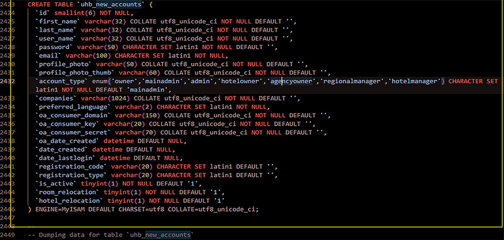
Multi-Property Database Architecture & Host Account Management Annex Reference: ANNEX-T-002
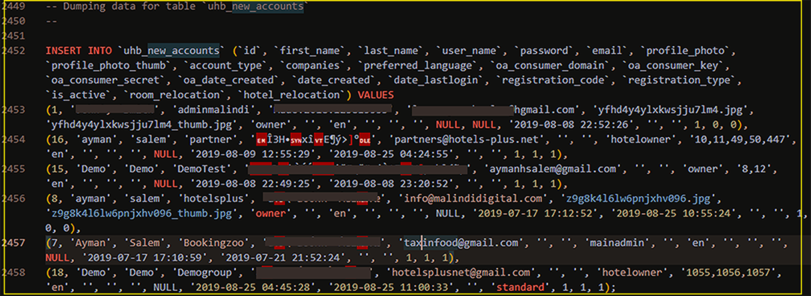
Source Text Excerpt: Hotel-Owner Account Records & Multi-Property Association
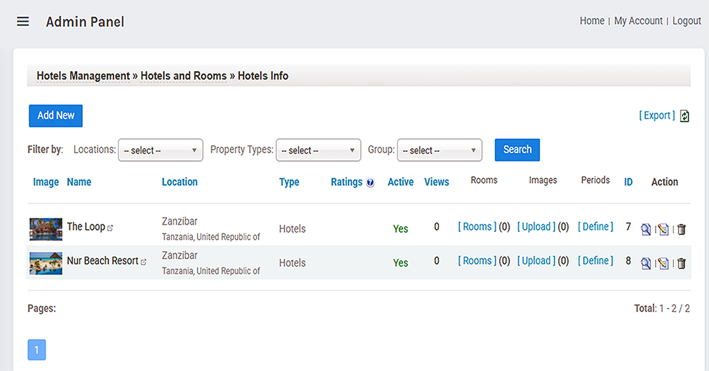
Source Text Excerpt: Hotels Management Interface Displaying Individual Hotel Records
Corresponds to Claim: Claim 1: "Storing a plurality of listings from a plurality of posting endusers
Source Text Excerpt: "I set up the database to support multiple property-owner accounts and
associated accommodation records. The account structure includes a
companies field and room- and hotel-relocation settingst uhb_new_hotels. Stores individual accommodation records in uhb_new_hotels and maintains multiple hotel-owner accounts in uhb_new_accounts[cite: 19].
Exhibit T-003-A&B: Hotel-Owner Registration Workflow & hotel_id Association
Page Reference: Page 3 of 31 | Annex Reference: ANNEX-T-003
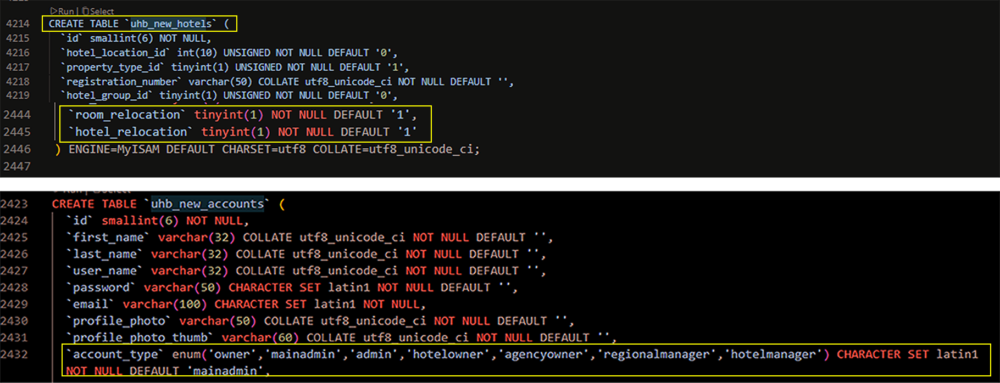
Source Text Excerpt: Accommodation Inventory Storage & Association.
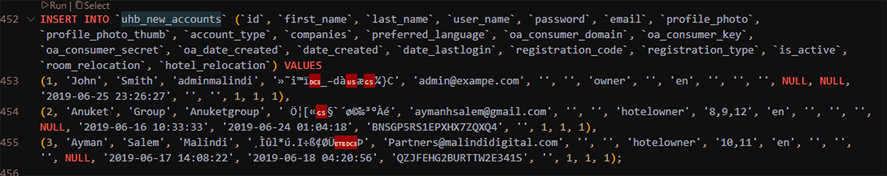
Source Text Excerpt: Hotel-Owner Registration Workflow & hotel_id Association
Hotels Plus-The registration workflow retrieves a selected property's hotel_id and associates it with the hotel-owner account. The database and search exhibits show how accommodation records are stored and processed.
Corresponds to Claim: Claim 1
Source Text Excerpt: "storing listing inventory specifying location coordinates and availability"
Exhibit T-004: Relocation Setting Check & Hotel-Owner Lookup
Page Reference: Page 4 of 31 | Annex Reference: ANNEX-T-004
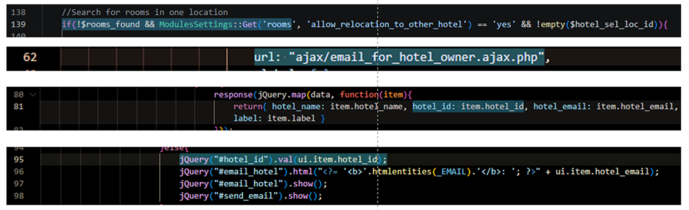
Corresponds to Claim: Claim 1: determining whether continuous availability satisfies the request...
Source Text Excerpt: The first code fragment checks whether rooms were found and whether hotel relocation is enabled. The AJAX fragments retrieve and populate hotelowner details. Together, they show a relocation-setting check and a separate host-lookup workflow
Exhibit T-005-A,B,C : Core Database Schemas for Accounts and Properties
Page References: Page 5 of 31, | Annex References: ANNEX-T-005
New Hotel Account Table

New User Account Table

Hotels Plus-The registration workflow retrieves a selected property's hotel_id and associates it with the hotel-owner account. The database and search exhibits show how accommodation records are stored and processed.

User-to-Managed-Hotel Relationship in Database Schema
Source Text Excerpt:These SQL schemas define account & accommodation fields, including location coordinates, booking policies and relocation settings
Claim 1: "storing listing inventory and user management structures
Exhibit T-007-A & B : Dual-Mode Relocation Flags & Language Constants
Page References: Page 7 of 31, | Annex References: ANNEX-T-007
Dual-Mode Relocation Flags & Language Constants
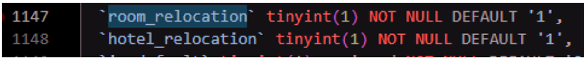
The database fields & language keys distinguish relocation to another room from relocation to another hotel. They document the configured relocation modes and the terminology used by the interface

These database bits and language keys (MSN_ALLOW_RELOCATION_TO_OTHER_ROOM) control whether the UI presents intra-property room switches or inter-property hotel hops.
Claim 1: "Intra-property and inter-property split-stay logic generation"
Exhibit T-008-A & B : Language Keys for Relocation Following an Empty Search
Page References: Page 8 of 31, | Annex References: ANNEX-T-008
Dual-Mode Relocation Flags & Language Constants

Language Keys for Relocation Following an Empty Search
Exhibit T-008-B : System Configuration Registry for Relocation Settings

System Configuration Registry for Relocation Settings
ExcerptThis configuration mapping governs when empty search results automatically unlock the smart relocation program for guests.
ExcerptThe configuration entries define room- and hotel-relocation options associated with empty search results. They document the available fallback settings, but do not independently establish the claimed minimum-inventory threshold.
Claim 1: "determining when inventory fails to satisfy minimum availability criteria"
Exhibit T-009: Frontend User Disclosure & Discount Constants
Page Reference: Page 9 of 31 | Annex Reference: ANNEX-T-009

Corresponds to Claim 1: "User-Facing Text Describing the Relocation Offer...
Source Text Excerpt: TThese are the exact strings displayed to users offering a 10% discount to split their holiday between two rooms or two hotels in the same area..
The displayed text describes an offer to split a stay between two rooms or two hotels in the same area. It documents how the relocation option was presented to users .
Exhibit T-010-A: Property Seed Data with Coordinates and Relocation Flags "28 May 2019"
Page Reference: Page 10 of 31 | Annex Reference: ANNEX-T-010
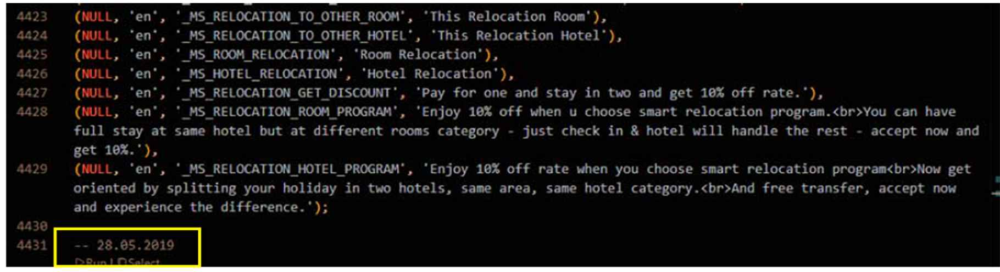
Exhibit T-010-B: Hotel Records Associating Coordinates with Relocation Permission Flags
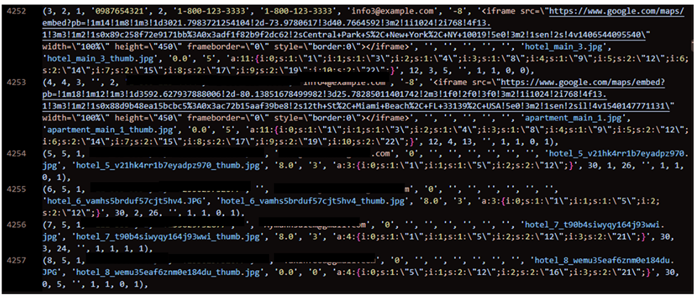
Corresponds to Claim 1: storing listing inventory specifying location coordinates and determining split listings within geographic distance limits...
Source Text Excerpt: The property records associate geographic coordinates with roomand hotel-relocation fields. This supports the stored property-data structure; the later exhibits address distance calculations and filtering.
Exhibit T-011-A: Account Model Retrieval of Room & Hotel Relocation Permissions
Page Reference: Page 11 of 31 | Annex Reference: ANNEX-T-011

Excerpt(Storing listing inventory... and determining split availability based on system configuration and inventory capabilities.*) Demonstrates object-oriented runtime instantiation of host account profiles ]. The system dynamically reads host-level and system-level permissions (`room_relocation` and `hotel_relocation`) to determine whether split-stay itineraries (intra-hotel or inter-hotel) are permissible during search result aggregation
Exhibit T-011-B: Account Seed Record with Active Relocation Permission
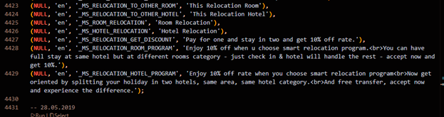
Source Text Excerpt: TThe SQL record shows an owner account with is_active = 1, room_relocation = 1 and hotel_relocation = 1, alongside the displayed timestamp of 25 June 2019. It establishes the recorded account settings and timestamp. Public availability is addressed by the accompanying Documentary and Visual annexes..
Exhibit T-012-A: Room-Level Booking Table Schema and Stay-Date Fields
Page Reference: Page 12 of 31 | Annex Reference: ANNEX-T-012

ExcerptThe uhb_new_bookings_rooms table contains booking, hotel and room identifiers, check-in/check-out dates and other reservation fields. It supports the storage of room-level booking information, but the schema alone does not prove that a master booking was linked to multiple executed stay segments
Exhibit T-011-B: Account Seed Record with Room- and Hotel-Relocation Flags (2019-06-25)

Source Text Excerpt: The SQL insert shows account records with stored activation and relocation fields. It supports the account-configuration evidence, rather than proving runtime account hydration or a completed split-stay transaction June 2019." .
Claim 1 & Dependent Claims 2-4::: System architecture storing listing availability and configuring dual-mode split-stay operation " .
Exhibit T-013: Standard Availability Search & Video Demonstration Cross-Reference
Page Reference: Page 13 of 31 | Annex Reference: ANNEX-T-013
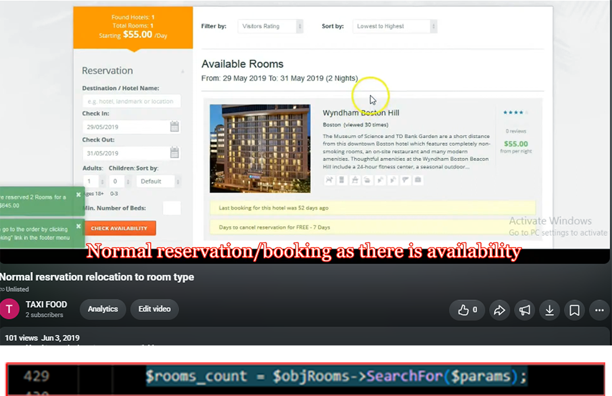
Corresponds to Claim 1: "identifying matching accommodation when availability is sufficient...
Source Text Excerpt: https://youtu.be/82XxQouNwQc?si=Uz2omF2w1SGb652v at [0:10/1:15]
The video frame shows the Hotels Plus availability-search interface under ordinary reservation conditions. It provides visual context for the search system but does not independently establish the generation of a two-part stay
Claim Mapping Matrix
| Target Claim No. | Claim Text (Verbatim) | Corresponding Prior Art Exhibit | Annex Page Ref |
|---|---|---|---|
| Claim 1 | "A system comprising: memory storing listing inventory; and one or more processors configured to execute instructions..." | Exhibit T003B / Exhibit T004 / Exhibit T005 / Exhibit T010 | ANNEX-T-003 (p. 3) ANNEX-T-004 (p. 4) ANNEX-T-005 (p. 5) ANNEX-T-011 (p. 11)[cite: 19, 20, 21, 27] |
| Claim 1 | "...receiving a listing request specifying a length of stay..." | Exhibit T006 (T-005A) | ANNEX-T-006 (p. 6)[cite: 22] |
| Claim 1 | "...determining that available inventory fails to satisfy a minimum availability threshold for the continuous length of stay..." | Exhibit T007 / Exhibit T008 | ANNEX-T-008 (p. 8, p. 9)[cite: 24, 25] |
| Claim 1 | "...generating a combined listing comprising a first portion for a first stay duration at a first listing and a second portion for a second stay duration at a second listing..." | Exhibit T009 / Exhibit T011 / Exhibit T014 | ANNEX-T-010 (p. 10) ANNEX-T-012 (p. 12) ANNEX-T-015 (p. 15)[cite: 26, 28, 31] |
| Claim 1 | "...causing presentation of the combined listing in ranked order." | Exhibit T015 (T015A / T015B) | ANNEX-T-016 (p. 16)[cite: 32] |
| Claim 1 | "...processing booking requests for multi-leg stay segments." | Exhibit T012 / Exhibit T016 | ANNEX-T-013 (p. 13) ANNEX-T-017 (p. 17)[cite: 29, 33] |
| Claim 1 | "...rendering search results in ranked order based on specified parameters." | Exhibit T017 (T017A / T017B) | ANNEX-T-018 (p. 18)[cite: 34] |
| Claim 2 | "The system of claim 1, wherein listings are categorized by thematic attributes or user groups." | Exhibit T022 (T022 / T022A / T022B) | ANNEX-T-023 (p. 23) ANNEX-T-024 (p. 24) |
| Claim 3 | "The system of claim 1, wherein the minimum length of stay threshold is configured as a minimum night duration constraint." | Exhibit T013 / Exhibit T018 | ANNEX-T-014 (p. 14) ANNEX-T-019 (p. 19)[cite: 30, 35] |
| Claim 4 | "The system of claim 1, wherein split availability is evaluated using stored user profiles and historical booking activity." | Exhibit T023 / Exhibit T024 | ANNEX-T-025 (p. 25) ANNEX-T-026 (p. 26) |
| Claim 12 | "The system of claim 1, wherein the second listing is selected within a maximum geographic distance limit from the first listing." | Exhibit T019 / Exhibit T020 | ANNEX-T-020 (p. 20) ANNEX-T-021 (p. 21)[cite: 36, 37] |
| Claim 13 | "The system of claim 1, wherein behavioral inferences or session parameters are monitored dynamically via endpoint requests." | Exhibit T021 / Exhibit T025 | ANNEX-T-022 (p. 22) ANNEX-T-027 (p. 27)[cite: 38] |